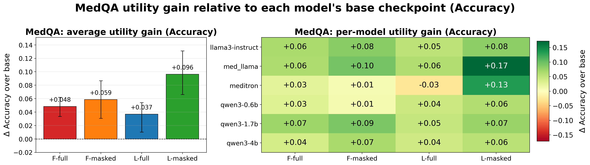
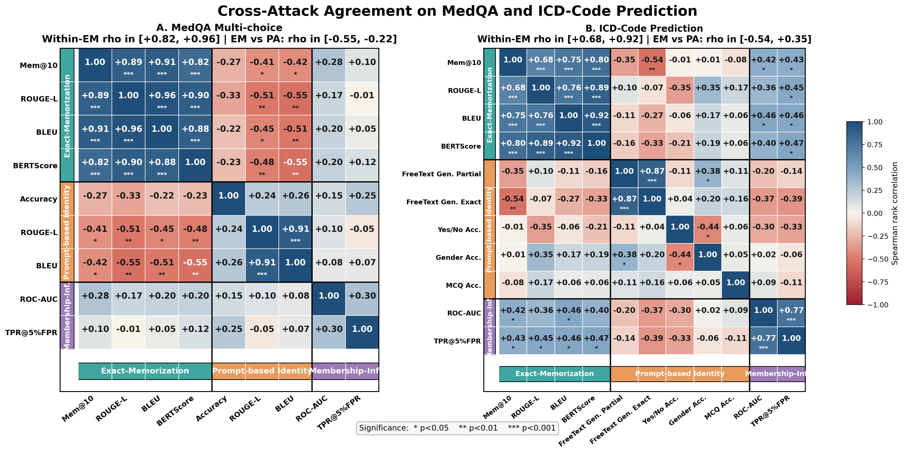
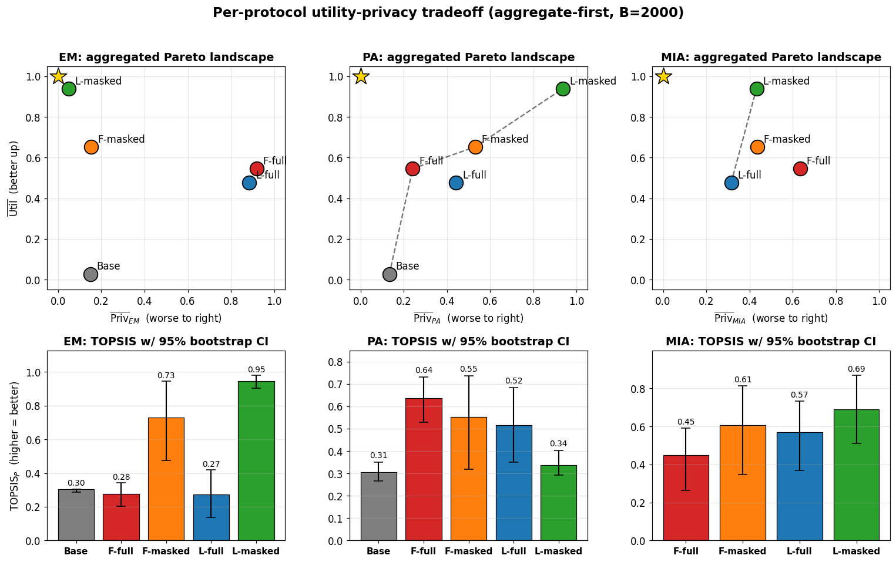
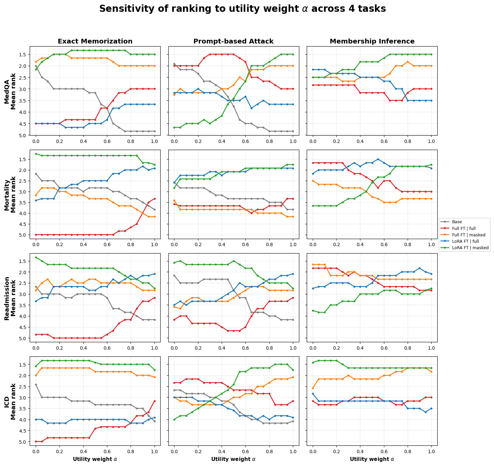
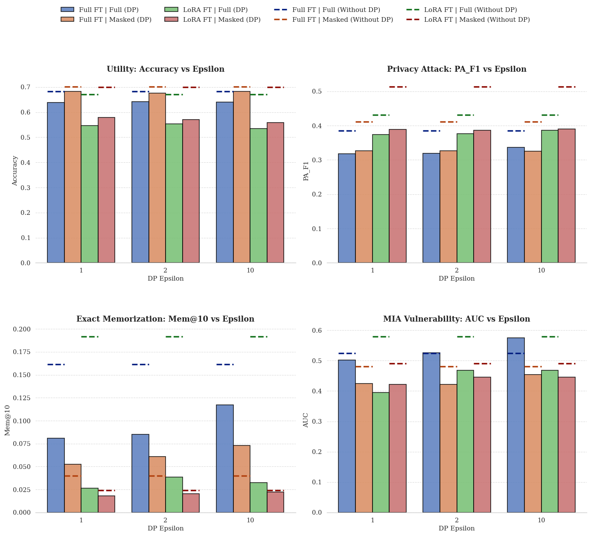

Three attacks, four fine-tuning regimes, no single verdict
LLaMA-3-8B-Instruct · MedLLaMA-3-8B · Meditron-7B · Qwen3-0.6B/1.7B/4B
MedQA · ICD-code prediction · in-hospital mortality · 15-day readmission
Full FT / QLoRA × full-input loss / masked-input loss
exact memorization · prompt-based identity · membership inference
across both fine-tuning paradigms and both loss formulations
Each attack family interrogates the model differently
Does it recite training text?
Greedy continuation from a 50-token prefix, scored by n-gram overlap (Mem@10/20/30/50), ROUGE-L, BLEU, and BERTScore. This is the most internally consistent family; its four metrics agree at ρ up to 0.96 across all tasks.
- Canonical metric: Mem@10
- Decoding: greedy (temp = 0)
- Prefix length: Lin = 50 tokens
Does a name unlock the record?
Clinical context is stripped away, leaving only a synthetic patient identifier. If the model still gets the diagnosis, outcome, or condition right, the identity alone is doing the leaking. PII is injected synthetically; no real patient data is used.
- Canonical metric: PA Accuracy
- Tasks: MedQA (name + question), mortality/readmission (Patient ID only), ICD (multi-choice classification)
Was this patient in the training set?
A Random Forest over likelihood-based signals (loss, perplexity, mean token confidence, Min-k% Prob) tries to separate training members from held-out non-members, reported at low false-positive rate following the LiRA convention.
- Canonical metric: TPR@5% FPR
- Classifier: Random Forest (100 trees)
- Features: NLL, perplexity, confidence, Min-20% Prob
Four configurations form the audit grid
All model weights updated; loss computed over both prompt and completion tokens. Highest adaptation capacity, highest privacy risk exposure.
All model weights updated; loss computed on completion tokens only. Isolates optimization to response generation behavior.
Parameter-efficient fine-tuning (rank r=16, 4-bit quantization); loss over full sequence. Fewer trainable parameters than full FT.
Parameter-efficient + completion-only supervision. Empirically the strongest privacy-utility configuration under exact memorization and MIA.
What the joint audit actually shows
Privacy metrics disagree within families and across them
Within the exact-memorization family, metrics move together (ρ ∈ [0.59, 0.96] across all four tasks). Across families, the story flips: on MedQA, exact-memorization scores are negatively correlated with prompt-based identity scores (ρ ∈ [−0.55, −0.41], p < 0.05), and membership inference is near-independent of either. A model that looks like the most private option under one attack can look like the leakiest under another.
Even within the prompt-based attack family, ROUGE-L shows a ρ = −0.6 relationship with PA accuracy on the readmission task but a different sign on MedQA ; revealing that a single metric within an attack family can emphasize entirely different leakage modes.
The “safest” fine-tuning regime depends on which attack you run
On MedQA, QLoRA with masked-input loss achieves the best exact-memorization trade-off (TOPSISEM = 0.945, 95% CI [0.90, 0.98]) and highest MIA score (0.691). But it ranks worst among fine-tuned configurations under prompt-based identity probing (TOPSISPA = 0.336). Full FT with full-input loss shows the opposite pattern: poor EM performance (0.275) but highest PA score (0.636).
| Configuration | EM TOPSIS | PA TOPSIS | MIA TOPSIS |
|---|---|---|---|
| Base (no FT) | 0.304 | 0.306 | — |
| Full FT | full loss | 0.275 | 0.636 | 0.448 |
| Full FT | masked loss | 0.731 | 0.552 | 0.606 |
| QLoRA | full loss | 0.274 | 0.516 | 0.568 |
| QLoRA | masked loss | 0.945 | 0.336 | 0.691 |
An α-weighted sensitivity sweep varying from privacy-only (α=0) to utility-only (α=1) confirms: no regime consistently dominates across all three protocols at any weighting.
Masked-input loss is a robust default, but not universally optimal
Across all four tasks, masked-input loss formulation always wins for utility gain. The only explicitly quantified value in the main text is MedQA: QLoRA with masked loss achieves a mean ΔAcc = 0.096 (95% CI [0.066, 0.131]) over each model’s base checkpoint, followed by full-parameter masked loss (ΔAcc = 0.058). For in-hospital mortality prediction, 15-day readmission, and ICD code prediction, masked loss also wins across both fine-tuning paradigms (Figure 12, Appendix C.1), though the relative advantage of QLoRA vs. full-parameter fine-tuning is less uniform than on MedQA.
For privacy, masked loss consistently reduces exact memorization risk but its advantage under PA and MIA is task-dependent. The privacy-utility trade-off is therefore not a property of the fine-tuning regime alone, but of the specific (regime, attack, task) triple.
Differential privacy helps broadly, but unevenly across attack families
DP-SGD fine-tuning reduces vulnerability under all three attack families relative to non-DP baselines, with effects most pronounced at ε = 1. On MedQA: Mem@10 for Full FT drops from 0.16 (non-DP) to 0.08–0.12 under DP; MIA AUC falls from 0.55–0.58 to 0.40–0.45. PA F1 scores are also lower under DP relative to non-DP baselines (non-DP: F1 0.38–0.50), though they remain relatively stable across epsilon values.
LoRA with masked loss is the strongest configuration under DP: it achieves near-zero PA accuracy on the mortality task and the lowest Mem@10 across all tasks. Full FT utility accuracy on MedQA is consistent across all ε values (∼0.65). On the mortality task specifically, LoRA accuracy is lower at ∼0.41–0.52 but Full FT utility is largely unaffected (∼0.83).
The grid, visualized





What this means for clinical LLM evaluation practice
HIPAA, GDPR, AI Act
HIPAA's Privacy Rule cares primarily about individual re-identification. A model with high MIA or verbatim-extraction risk may not constitute a legal violation under HIPAA if it does not enable unique identification , yet both attacks may predict real harm in deployment. Reporting all three families raises the evidentiary bar.
No free lunch in fine-tuning
There is no universally privacy-safe fine-tuning recipe. A masked-loss QLoRA fine-tune is strong against exact memorization and MIA but vulnerable under identity probing. Report the base model baseline, fine-tuning strategy, task utility, and multi-family privacy measurements together.
Use our benchmark
We release all code as a public benchmark for clinical-LLM fine-tuning privacy-utility evaluation. The benchmark covers the full grid: six backbones × four tasks × four regimes × three attack families, including DP-SGD baselines at ε ∈ {1, 2, 10}.
BibTeX
@inproceedings{anon2026privacy,
title = {Don't Call It Privacy Until You Pick a Metric:
Joint Auditing of Fine-Tuning and Privacy Metrics
in Clinical LLMs},
author = {Anonymous Author(s)},
booktitle = {Advances in Neural Information Processing Systems},
volume = {39},
year = {2026},
note = {NeurIPS 2026}
}